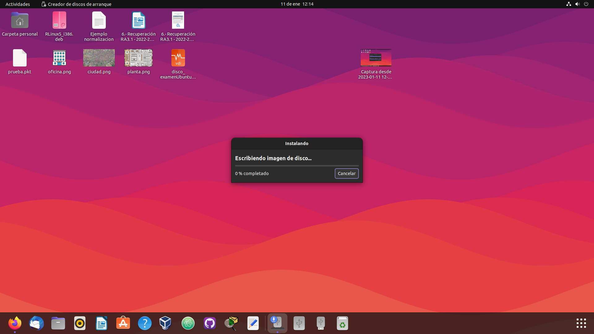
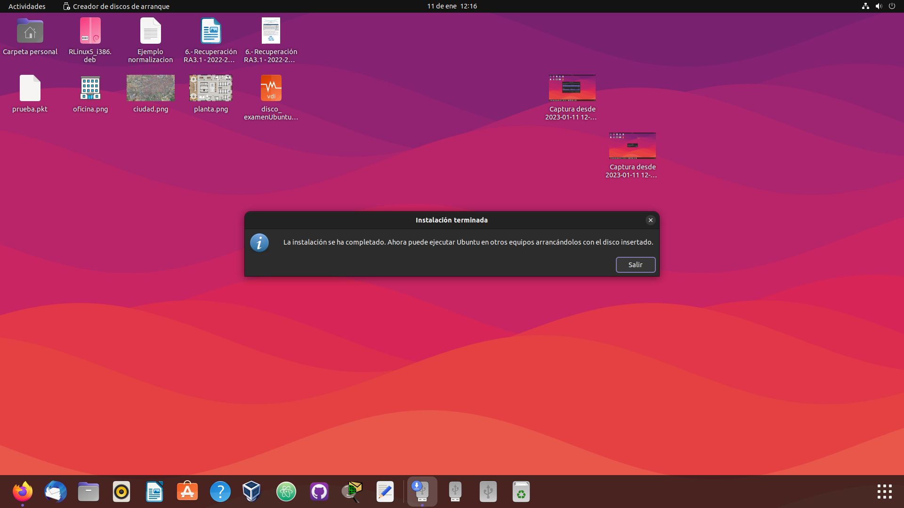
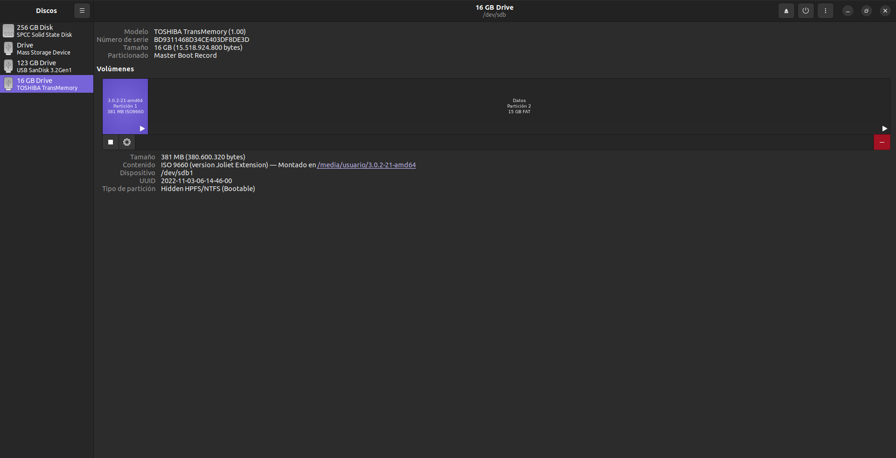
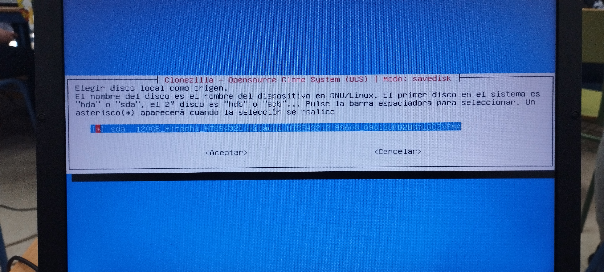
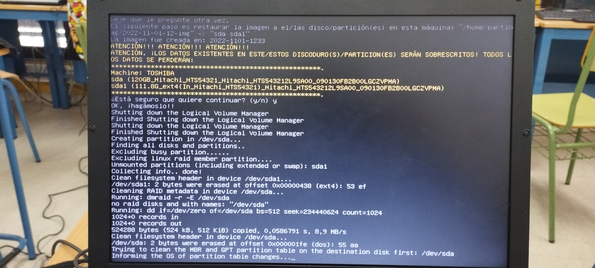

Clonezilla Pendrive/Disco Duro
Clonezilla es un software libre de recuperación de una imagen creada de un sistema operativo,
tiene diversas funcionalidades como crear una imagen del sistema o eliminarla o por ejemplo eliminar una partición.
Clonezilla está diseñado por Steven Shaiu y desarrollado por el NCHC Labs en Taiwán.
Creacion del Pendrive de Arranque
Para crear nuestro pendrive de arranque utilizaremos la herramienta de creacion de discos de Ubuntu,
tambien tendremos que tener descargado el archivo ISO de Clonezilla.
Entonces seleccionamos nuestro Pendrive y el Archivo ISO de Clonezilla para iniciar el proceso.

Esperamos a que se termine el proceso

Le damos a Instalar

Esperamos a que se instale

Ya estaria instalado Clonezilla en el pendrive
Creación de la Imagen en el Disco
En este apartado vamos a crear una imagen de disco del equipo y la guardaremos en la particion que tengo hecha en el pendrive
Lo primero que vamos hacer sera enchufar nuestro pendrive y arrancar el equipo con el para acceder al menu de Clonezilla

En este menu seleccionaremos la primera opcion para pasar al siguiente proceso
A continuación seleccionaremos el idioma que usaremos para el teclado
Le decimos que si queremos mantener la configuracion seleccionada
Y seleccionamos "Aceptar" para arrancar Clonezilla
En este menu selecionaremos la opcion device_image para realizar una imagen de disco
En este menu selecionaremos el modo local_dev para usar la particion de que hemos creado
En este apartado seleccionaremos la particion que realizamos en el pendrive para alojar la imagen de disco
En mi caso voy a omitir el chequeo del disco para que se realize mas rapido, pero siempre recomiendo hacerlo para evitar errores en el disco

En este parte me esta diciendo en que directorio quiero almacenar la imagen, yo lo voy a dejar por defecto en el raiz "/"
Aqui simplemente le daremos a Principiante para que se automaticen algunos procesos y sea mas rapida la creación de la imagen
Ahora seleccionamos en este menu el modo save_disk para guardar el disco local como imagenes
A continuación pondremos el nombre a la imagen del disco

Seleccionamos el disco del cual realizaremos la imagen
Aqui simplemente usaremos la zip, porque es la que mas se usa y no da problemas de compatilidad
Omitiremos el chequeo del sistema de archivos porque asi es mas rapido, pero siempre recomiendo hacer este chequeo para evitar errores inoportunos
Tambien nos saltaremos la comprobacion despues de que se guarde para saber si es restaurable, pero recomiendo siempre hacerla para evitar errores
En mi caso no me hace falta cifrar los datos, pero si lo desea puede usar una contraseña para que solo usted pueda usar esa imagen de disco
Y por ultimo seleccionaremos la accion que queremos que haga el equipo cuando se termine de hacer la imagen, en mi caso lo quiero apagar
Confirmamos por ultima vez de que si queremos hacer la imagen de disco en la particion de nuestro pendrive
Y esperamos a que se realice el proceso
Y estaria hecha nuestra imagen, ahora pasaremos a la restauracion
Restauración con la Imagen de Disco
En este apartado realizaremos la restauración del equipo con la imagen de disco que hemos hecho anteriormente
Volvemos a seleccionar la primera opcion para entrar al menu de Clonezilla
Ahora en este menu seleccionaremos la opcion restore_disk para poder usar la imagen que hemos hecho anteriormente
Seleccionamos la imagen que hicimos
Ahora seleccionamos el disco donde vamos a instalar la imagen para poder restaurarlo
Le diremos que si vamos a usar la misma tabla de particiones para que no haya fallos
Y nos volvemos a saltar las comprobaciones porque es mas rapido de esta manera, pero recomiendo hacerla por si esta dañada
Y ya aqui nos va a pedir lo que va hacer el equipo cuando termine de restaurarse, en mi caso lo apago

Nos sale un aviso de que el disco va a ser borrado para poder instalar la imagen y le damos que si
Y esperamos a que se termine la restauración
Como podemos comprobar el disco equipo se ha restaurado correctamente